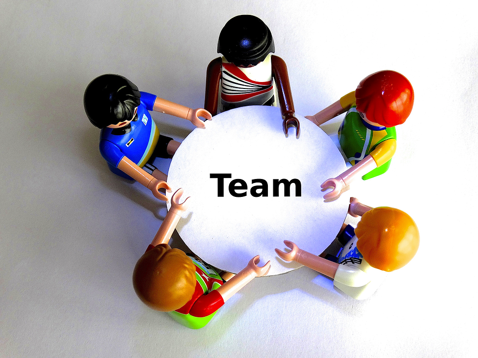
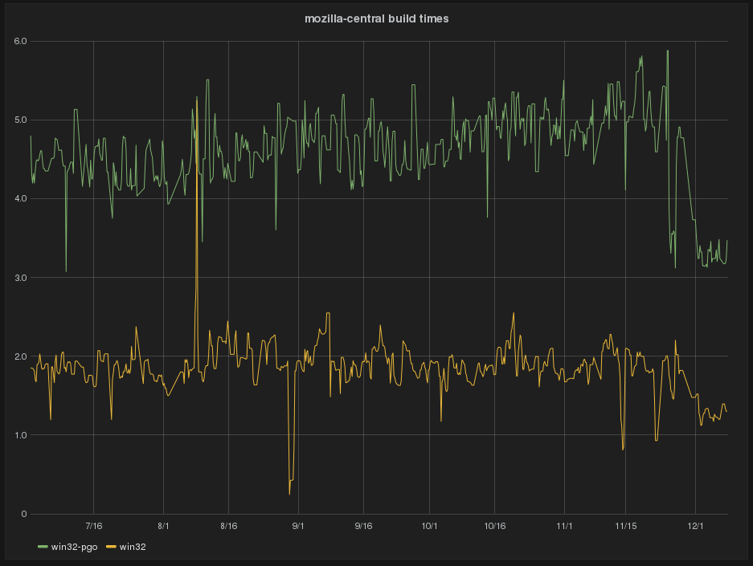

Release Engineering
A brief look at RelEng since Whistler
Our Team
Welcome Vlad, Alin!
Welcome (back!) Mihai!
Releases
- July 2nd - Shipped Firefox 39
- 8 releases shipped since then...
- including 5 point releases...
- and our big "moment in time" release, Firefox 42
- We also turned on Funsize in production for Nightly / Aurora builds!
FxOS moment-in-time release (2.5)
Heroic efforts by many to pull this together
We relied on team work and great tools to support new products like B2GDroid
Release build promotion
Streamlining our release pipeline to ship the CI builds we've already built and tested
Tons of improvements for Windows
Shipped 64-bit Windows for the first time in Firefox 42
Windows build times reduced by nearly 50%!
MOAR improvements:
Runner support
Testing on Windows 10
Testing in the cloud!

...almost
mozharness in the tree!
RIP
XULRunner
Pandas (almost)
Mass migrations
Migrated "FTP" off of the netapp into S3
Migrated out of PHX1
Task cluster
- Tier 2 builds: OSX (!!), Linux
- Buildbot bridge to link buildbot and TC builds and tests together
- Github integration
- Coalescing service
- Locking down authentication
- Publishing artifacts using the index
How to MozLando
- https://public.etherpad-mozilla.org/p/releng-mozlando-unconference
- Meet new people, say "thank-you"
- Build awesome things